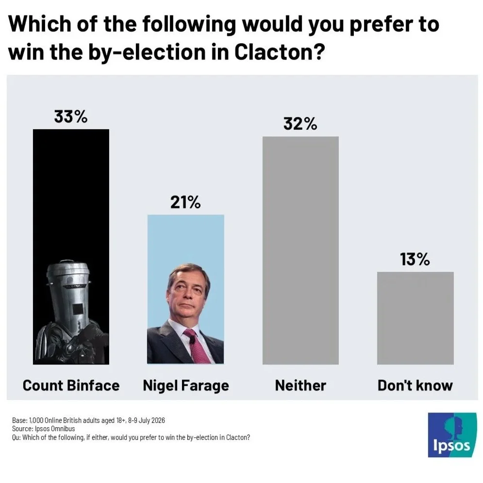

El distrito electoral de Clacton en Reino Unido presenciará el próximo 13 de agosto una de esas elecciones que pueden cambiar el futuro político de un país o de todo el continente. A un lado Nigel Farage, líder de Reform UK, cabeza visible de la campaña a favor del Brexit, ultranacionalista identitario inglés, negacionista climático, islamófobo, pro-israelí, ex-protegido de Elon Musk y, si se convocasen elecciones generales hoy, futuro primer ministro británico. Al otro lado Count Binface, lider del Count Binface Party, guerrero espacial intergaláctico de Sigma Nueve y lucidor de su característico cubo de la basura en la cabeza. El que hasta hace poco no era más que un candidato curioso en las últimas elecciones, ahora es el principal rival de una de las figuras políticas más importantes de Europa.
¿Por qué estas elecciones?
Todo el caos estalló el 7 de julio cuando, para sorpresa de todos sus oponentes, Nigel Farage dimitió como miembro del Parlamento Británico. Esta acción se debió a la investigación abierta por el Parlamento de dos donaciones que Farage recibió y nunca declaró como el reglamento de la cámara obliga. El político asegura que se trataban de regalos personales, los cuales no debería declarar según el reglamento, y que no ha realizado ninguna acción reprobable. “Soy la figura pública más atacada de los tiempos modernos” -aseguró en la rueda de prensa en la que anunció su dimisión. Sin embargo, esta dimisión no es definitiva puesto que se presentará en las elecciones parciales para el asiento que deja vacante. “El pueblo de Clacton debería ser el juez de mis acciones -explicó-. Estas serán unas elecciones del pueblo contra el establishment.”
En Reino Unido cuando el asiento de un miembro del Parlamento queda vacante, ya sea por dimisión o fallecimiento, se activa una nueva elección para volver a ocuparlo. Los distritos electorales eligen directamente a su representante, lo que significa que, al ocupar Nigel Farage el asiento por el distrito de Clacton, será esa localidad la que tenga que ir a las urnas el mes que viene. El sistema electoral británico funciona con un sistema first-past-the-post (escrutinio mayoritario uninominal) que da el único asiento en disputa al candidato con más votos, indiferentemente del porcentaje obtenido. Esto castiga en gran medida a una oposición fragmentada y ha sido la causa del aguante del bipartidismo en Reino Unido hasta el momento.
Nigel Farage: "Soy la figura pública más atacada de los tiempos modernos"
Sin embargo, si Farage gana, sus complicaciones legales no habrán acabado. Más allá de la legitimidad que está buscando reforzar con estas nuevas elecciones, si vuelve a ser miembro del Parlamento, la investigación se reanudará llegando a poder imponer una sanción que implique elecciones anticipadas en el distrito. Esto significa que es posible que veamos dos elecciones en la localidad este año. Todos los demás partidos son conscientes de ello, razón por la cual han decidido no participar. El gobernante Partido Laborista aseguró que no presentarán un candidato en “este circo”, un sentimiento que los demás partidos mayoritarios han repetido.
El candidato que se presenta
El marco de batalla contra el establishment que Farage buscaba construir se ha caído ante la negativa de los partidos en participar, pero fue dañado aún más cuando se supo que candidato sí competiría: Count Binface. Conocido en España como Conde Cubo de Basura, se trata de un candidato satírico interpretado por el cómico Jonathan David Harvey. Entre sus medidas se encuentra abolir la Cámara de los Lores, detener la venta de armas a regímenes opresivos, abolir el VAR, el reclutamiento forzado de aquellos que escuchen música con altavoces en el transporte público o construir “al menos una” vivienda asequible
En este momento Farage tiene dos opciones: vence al hombre con un cubo de basura en la cabeza, o pierde ante el hombre con un cubo de basura en la cabeza. Lo que en un principio fue una estrategia para legitimarse gracias al pueblo de Clacton, se ha convertido en una situación incómoda en la que debe tomarse en serio una campaña en la que su principal oponente promete mover el secador de manos del bar Crown and Treaty a un sitio “sensato”, y aunque venza sus problemas legales no han terminado.
Pero… ¿puede Count Binface ganar?
Esa es la pregunta que todo el mundo se está haciendo ahora. La respuesta corta es no. La respuesta larga es “las posibilidades no son cero”. Farage ganó este asiento con un 46,2% de los votos en las últimas elecciones en 2024 y, en las encuestas para las elecciones generales, Pollcheck da a Reform UK un 60,2% de los votos. Además, desde su creación, el distrito electoral que está compuesto en un 95% por población blanca solo ha votado a candidatos conservadores y casi el 70% votó a favor del Brexit.
Sin embargo, no es una elección tan sencilla para Farage como podría parecer. Al ser preguntados por la dimisión de Farage, aunque sin duda mantiene un gran respaldo, varios simpatizantes de la localidad no aprobaron la decisión del político. Como Count Binface está recordando constantemente en sus entrevistas, estas elecciones parciales costarán a las arcas públicas alrededor de 235.000 euros, coste que se doblaría en caso de tener que repetirse tras la investigación parlamentaria.

Además, será muy importante que ambos candidatos consigan movilizar a su base. Vista esta elección como ya ganada por Farage, es muy probable que haya una participación menor. Es por ello que no se puede descartar que, movilizando un voto anti-Farage muy emocional, Count Binface de un susto al político conservador porque su electorado se ha quedado en casa pensando que su voto no era necesario.
Sin embargo, este no parece el escenario más probable. El propio Count Binface afirmó que “probablemente” no ganaría, pero con miembros de los laboristas, conservadores, liberales y verdes apoyándolo, no es una posibilidad a descartar. Aunque improbable, el candidato que se vende como “no Farage” podría cambiar el futuro inmediato de la política británica.